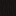
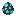

Getting Started
Welcome to the Vesper Wilds! This mod adds an atmospheric, twilight-themed experience to Minecraft. This guide will help you find the new content and understand the basics.
1. Finding the Vesper Grove
The core of the mod is the Vesper Grove (and its dense counterpart, the Velvet Forest). These biomes are characterized by deep purple foliage and a permanent twilight atmosphere.
- Look for: Purple-leaved trees and glowing Vesper Stoneoutcroppings.

- Ambient Effects: You will notice custom falling leaf particles and a uniquely serene soundscape.
2. Harvesting Velvet Wood

The primary resource in these biomes is Velvet Wood.
- Punch or chop Velvet Logs to collect them.
- These can be crafted into Velvet Planks, which can further be turned into a full set of wood blocks (Stairs, Slabs, Doors, Trapdoors, etc.).
- Note: Velvet Wood has a rich, dark purple hue that is excellent for "moody" or magical builds.
3. Mining Vesperite
Deep within the Vesper Wilds (and sometimes in the overworld deepslate layers), you will find Vesperite Ore.
- Mine this to get Raw Vesperite.

- Smelt Raw Vesperitein a Furnace or Blast Furnace to obtain Vesperite Ingots.
- Vesperite Tools: Crafting tools with Vesperite unlocks the Twilight Resonance mechanic.
4. Survival Tips
- Foraging: Keep an eye out for Glint Berries and Velvet Berries for easy food sources.
- Ambient Threats: The Gloom Stalkeris a hostile entity that patrols the dark skies—ensure you have a roof over your head or decent armor!

Last updated: March 17, 2026